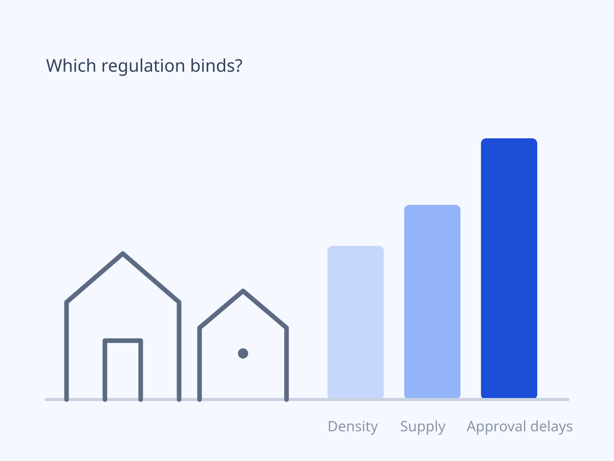
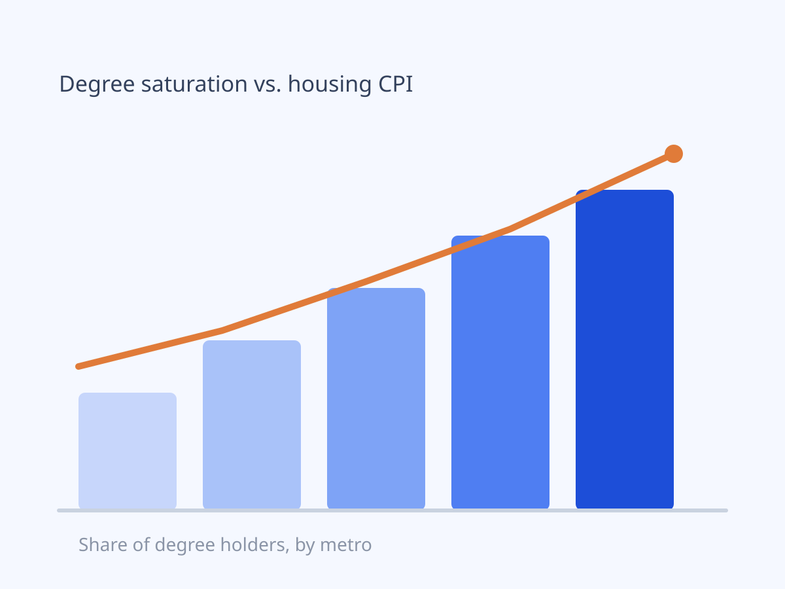

Did congestion pricing clear the tunnels?In progress
Estimating the effect of Manhattan’s 2025 congestion pricing on tolled tunnel traffic using ridge-augmented synthetic control on Port Authority and MTA crossing data.
Read the writeup →I study markets and policy with data.
I’m a recent Princeton graduate (A.B. Economics, ’26) working at the intersection of economics and data science. My training is in econometrics, causal inference, and statistical modeling, with a toolkit spanning Python, R, Stata, and SQL.
Right now I’m building portfolio projects in applied causal inference — most recently a synthetic-control study of New York City’s congestion pricing — and I’m looking for analyst roles in New York: data analytics, economic consulting, risk, or trading. Outside of work I sail, follow jazz, and compete in prediction markets.
Led a firm-wide IT asset inventory audit and built a repeatable census methodology that cut future audit lead times by ~50%; wrote Python scripts to reconcile inventory data across offices.
Applied consulting frameworks and deep research to fundraising, stakeholder management, and impact measurement for a nonprofit client; built and delivered the client-facing presentation of recommendations.
Advised domestic and international students through the U.S. college admissions process — application strategy, essays, timelines, and school selection.
Estimating the effect of Manhattan’s 2025 congestion pricing on tolled tunnel traffic using ridge-augmented synthetic control on Port Authority and MTA crossing data.
Read the writeup →
Decomposed the Wharton Land Use Regulatory Index into mechanism-specific sub-indices and estimated their effects on housing affordability across U.S. metros using 15M+ ACS/IPUMS observations. Approval delays emerged as the binding margin.
Read the writeup →
Tested whether excess saturation of degree holders contributes to demand-pull increases in housing CPI, using CPS microdata in a difference-in-differences design.
Read the writeup →